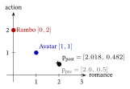
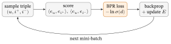
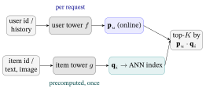
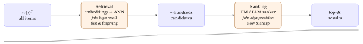

Training and Serving a Recommender
1. The gap: from a score to a system
You can already score a (user, item) pair — that was the whole of the model chapters. But a recommender has to do two more things, and they are exactly the two this chapter owns.
Training. The score \(\hat r_{ui}=\mathbf p_u\cdot\mathbf q_i\) is only as good as the embeddings \(\mathbf p_u,\mathbf q_i\) in it, and those start as random numbers. Training is the loop that walks them from random to useful by repeatedly showing the model a contrast — “this item beats that one for this user” — and nudging the vectors so the score agrees. The objective (BPR) was given in Losses & Regularizers §9; the loop around it is §3–§5 here.
Serving. A trained model must, on request, return a short ranked list for a user out of a catalogue that may hold tens of millions of items — in a few milliseconds. Scoring every item and sorting is correct but far too slow at that scale, so real systems use approximate nearest- neighbour search and split the work into a retrieval → ranking funnel. That is §6–§8.
These concerns are cross-cutting: the same loop trains MF, LightGCN, or an SSL model (they differ only in how \(\mathbf p_u,\mathbf q_i\) are computed before the dot product); the same funnel serves all of them. That is why they get one chapter of their own instead of being repeated in each model chapter.
2. Implicit feedback: where do the negatives come from?
Recall the central fact of implicit feedback (Traditional RecSys §1): the data is positives-only. We see what a user clicked, watched, bought — never an explicit “disliked.” A blank cell is unknown, not a confirmed no.
This is a problem the moment you want to rank. A ranking loss like BPR is built on triples \((u, i^+, i^-)\) — “user \(u\) prefers item \(i^+\) over item \(i^-\)” — and it needs a negative \(i^-\) for every positive \(i^+\). But the data hands us only positives. So we must invent the negatives:
Negative sampling. For each observed positive \((u, i^+)\), draw an item \(i^-\) that \(u\) has not interacted with and treat it as a (provisional) negative. Why the name: we sample a few stand-in negatives rather than using all un-clicked items (there are millions) or pretending we have true labels (we don’t).
Two things make this sound rather than a hack:
- A random un-clicked item is usually genuinely uninteresting to \(u\) — so it is a good enough negative on average, even though any single draw might accidentally be a false negative (an item \(u\) would have liked but never saw).
- We only need the relative order \(\hat r_{u,i^+}>\hat r_{u,i^-}\) to be right, not absolute labels. Pushing observed items above random un-clicked ones, over millions of triples, is enough to learn a good ranking.
The whole training loop is built on this one move. So before the loop, we must choose how to sample.
3. How to sample a negative
There is more than one sampling distribution, and the choice measurably changes what the model learns. Four are worth knowing.
Uniform (the default). Pick \(i^-\) uniformly at random from the items \(u\) has not touched. Every un-clicked item is equally likely. This is the default BPR negative sampler (Losses & Regularizers §9) — cheap, popularity-neutral, and a strong baseline. (It is “unbiased” only in the sense of no popularity skew; it is not an unbiased estimate of the full-softmax gradient — the gap the logQ correction below repairs.)
Popularity-weighted. Sample \(i^-\) with probability proportional to its popularity raised to a power — the same \(\text{pop}^{0.75}\) trick word2vec uses for its negatives (Representation Learning & the Transformer). Popular items are sampled as negatives more often, which (a) makes harder negatives (a popular item is a more confusable distractor than an obscure one) and (b) directly pushes popular items down, countering their tendency to be over-recommended (the popularity bias of Evaluation Metrics §12). The \(0.75\) power tempers the skew so rare items still appear.
In-batch negatives. Don’t sample fresh items at all — reuse the other positives in the current mini-batch as negatives for each other. If the batch holds positives for 1,024 different (user, item) pairs, each user gets \({\sim}1{,}023\) ready-made negatives for free (no extra lookups). This is the standard trick for the contrastive loss in SSL & Contrastive Learning §3.4, and the cheapest way to get many negatives. Its one hazard: a genuine positive that happens to share the batch becomes a false negative (pushed apart) — rare, but likelier for very popular items. The standard production fix is a logQ correction: subtract each item’s log-sampling-probability (roughly its log-popularity) from the in-batch logits, so frequent items are not systematically over-penalized as negatives.
Hard negatives. Deliberately pick high-scoring un-clicked items — the ones the model currently gets wrong (ranks too high). These carry the most gradient signal, so the model learns faster; but pushed too far they overlap true positives and hurt. Used carefully (e.g. dynamic negative sampling), they sharpen a model that uniform negatives have left “good but blurry.” Dynamic (hard) negative sampling re-mines the hardest un-clicked items for each user every few thousand steps — rather than fixing them once per epoch — so the negatives keep getting harder as the embeddings improve.
Worked example. Ann has interacted with \(\{\)Titanic, Avatar\(\}\); the three un-clicked candidates and their play-counts are below. Uniform gives each \(\tfrac13\); popularity-weighted uses \(\text{pop}^{0.75}\), normalized.
| Candidate negative | Popularity (plays) | \(\text{pop}^{0.75}\) | Uniform \(p\) | Popularity-weighted \(p\) |
|---|---|---|---|---|
| Rambo (blockbuster) | 60 | 21.56 | 0.333 | 0.539 |
| Die Hard | 30 | 12.82 | 0.333 | 0.320 |
| The Notebook (niche) | 10 | 5.62 | 0.333 | 0.141 |
Whatever the sampler, the output is the same: a stream of triples \((u, i^+, i^-)\). Now we can train.
4. One training step, by hand
Take one triple and walk it through the loop on the Traditional RecSys §5 vectors, so every number is checkable.
Setup. User Ann has factors \(\mathbf p_{\text{Ann}}=[\,2,\,0.5\,]\) (romance \(2\), action \(0.5\)). The positive is Avatar, \(\mathbf q^{+}=[\,1,\,1\,]\); the sampled negative is a pure- action film Rambo, \(\mathbf q^{-}=[\,0,\,2\,]\). Learning rate \(\eta=0.1\).
Step 1 — score the pair (forward). Two dot products: \[ \hat r^{+}=\mathbf p_{\text{Ann}}\cdot\mathbf q^{+}=(2)(1)+(0.5)(1)=2.5,\qquad \hat r^{-}=\mathbf p_{\text{Ann}}\cdot\mathbf q^{-}=(2)(0)+(0.5)(2)=1.0 . \] The score gap is \(d=\hat r^{+}-\hat r^{-}=2.5-1.0=1.5\). Ann already ranks Avatar above Rambo, but only by \(1.5\) — there is room to push.
Step 2 — the loss (how wrong are we?). BPR’s per-triple loss is \(-\ln\sigma(d)\) (the Losses & Regularizers §9 result; \(\sigma\) is the sigmoid). With \(d=1.5\): \[ \sigma(1.5)=0.8176,\qquad \mathcal{L}=-\ln(0.8176)=0.2014 . \] A small but non-zero loss — the model is mostly right and will be nudged gently.
Step 3 — the gradient (which way to move). Losses & Regularizers §9 gives the BPR gradient as \(\dfrac{\partial\mathcal L}{\partial\theta}=-\big(1-\sigma(d)\big)\dfrac{\partial d}{\partial\theta}\) — the factor \(-(1-\sigma(d))\) is large when \(d\) is small/negative (a triple we get wrong) and near zero when \(d\) is large (already correct), so the loop spends its effort where it is wrong. Here \(1-\sigma(1.5)=0.1824\). For matrix factorization the score is a dot product, so \(\dfrac{\partial d}{\partial \mathbf p_u}=\mathbf q^{+}-\mathbf q^{-}\), giving \[ \frac{\partial\mathcal L}{\partial \mathbf p_{\text{Ann}}} =-\,0.1824\,\big(\mathbf q^{+}-\mathbf q^{-}\big) =-\,0.1824\,\big([1,1]-[0,2]\big) =-\,0.1824\,[\,1,\,-1\,]=[\,-0.1824,\ 0.1824\,]. \]
Step 4 — the update (move downhill). Gradient descent subtracts \(\eta\) times the gradient: \[ \mathbf p_{\text{Ann}}\leftarrow \mathbf p_{\text{Ann}}-\eta\,\frac{\partial\mathcal L}{\partial\mathbf p_{\text{Ann}}} =[\,2,\,0.5\,]-0.1\,[\,-0.1824,\ 0.1824\,]=[\,2.0182,\ 0.4818\,]. \] Read the move: Ann’s romance factor went up (\(2\to2.018\)) and her action factor went down (\(0.5\to0.482\)) — she was nudged toward the romance-heavy positive and away from the action negative. (The item vectors \(\mathbf q^{+},\mathbf q^{-}\) update by the symmetric rule; we move only \(\mathbf p_{\text{Ann}}\) here to keep the arithmetic small.)
Did it work? Re-score with the updated Ann: \[ \hat r^{+}_{\text{new}}=[2.0182,0.4818]\cdot[1,1]=2.500,\qquad \hat r^{-}_{\text{new}}=[2.0182,0.4818]\cdot[0,2]=0.9635, \] so the gap widened from \(d=1.500\) to \(d'=1.536\). One triple, one step — the positive moved further above the negative, which is exactly what ranking training is for. Multiply this by millions of triples over many epochs and the embeddings settle into a geometry where observed items reliably out-score sampled ones.

5. The training loop
Steps 1–4 are one update. The full training is just that update, looped over mini-batches and epochs:
initialize all embeddings E randomly
for epoch in 1..T:
for each mini-batch of positives (u, i+):
for each (u, i+): sample a negative i- # §3
scores = dot(e_u, e_i+), dot(e_u, e_i-) # forward (§4 step 1)
L_bpr = mean( -ln sigma(score+ - score-) ) # loss (§4 step 2)
loss = L_bpr + lambda * ||E||^2 # + L2 regularizer
grads = backprop(loss) # gradient (§4 step 3)
E = optimizer_step(E, grads, eta) # update (§4 step 4)- An epoch is one pass over all observed positives; you run several (until validation NDCG — Evaluation Metrics §7 — stops improving, i.e. early stopping, a regularizer from Losses & Regularizers §5).
- A mini-batch is a handful of triples processed together (so the update uses an average gradient — steadier than one triple at a time, cheaper than all of them). It is also where in-batch negatives (§3) come from.
- The only learnable parameters are the embeddings \(E\). For MF those are \(\mathbf p_u,\mathbf
q_i\) directly; for LightGCN they are the base table \(E^{(0)}\), and the forward pass first propagates them over the graph (From Graphs to LightGCN §7–§11) before the dot product — but the loop around it is identical. Concretely: in the pseudocode above, the
e_uande_i+that enterdot()are for LightGCN the propagated, layer-averaged embeddings \(\bar{\mathbf e}_u = \frac{1}{L+1}\sum_{\ell=0}^{L}\mathbf e_u^{(\ell)}\) (where \(L\) is the number of graph propagation layers) — the output of the graph aggregation described in From Graphs to LightGCN §10–§11 — not the raw rows of \(E^{(0)}\); the base table is what the optimizer updates, but the dot product always operates on the propagated result.

That is the whole of training. SSL & Contrastive Learning extends this loop by adding a second loss term (\(+\lambda\mathcal L_{\text{cl}}\)) computed from a second “view” of the graph; everything else — sample, score, backprop, step — is what you see here.
6. From embeddings to a ranked list: inference
Training leaves us with a frozen table of embeddings. Inference (serving) is the act of using them to answer a request: give user \(u\) their top \(K\) items. The recipe is the mirror of scoring:
- Take the user vector \(\mathbf p_u\).
- Score every candidate item: \(\hat r_{ui}=\mathbf p_u\cdot\mathbf q_i\) for all \(i\).
- Remove items \(u\) has already seen (you don’t re-recommend a watched film).
- Sort by score and return the top \(K\).
Worked example. Use the trained \(\mathbf p_{\text{Ann}}=[2.018,\,0.482]\) from §4 against a tiny catalogue. Ann has already seen \(\{\)Titanic, Avatar\(\}\), so they are filtered out; the rest are scored by the dot product:
| Item (unseen) | \(\mathbf q_i\) | score \(\mathbf p_{\text{Ann}}\cdot\mathbf q_i\) |
|---|---|---|
| The Notebook | \([2,\,0.2]\) | \(2.018(2)+0.482(0.2)=\mathbf{4.132}\) |
| La La Land | \([1.5,\,0.5]\) | \(2.018(1.5)+0.482(0.5)=\mathbf{3.268}\) |
| Die Hard | \([0.5,\,1.8]\) | \(2.018(0.5)+0.482(1.8)=\mathbf{1.877}\) |
| Rambo | \([0,\,2]\) | \(2.018(0)+0.482(2)=\mathbf{0.964}\) |
Sorted, the ranking is Notebook \(>\) La La Land \(>\) Die Hard \(>\) Rambo, so \(\text{top-}2 = \{\)Notebook, La La Land\(\}\). Sensible — and trivial on four items. The trouble is the scale: step 2 scores every item. With \(M\) items and a \(d\)-dimensional dot product, one user costs \(O(Md)\), and a catalogue of \(M=10^{7}\) items makes that hopeless to do exactly for every request. That is the problem §7 solves.
7. Serving at scale: approximate nearest-neighbour search
Two towers: the retrieval model behind the index
§6 scored with a single learned table (\(\mathbf p_u\) for users, \(\mathbf q_i\) for items). Production retrieval keeps that dot product but produces the vectors with two separate networks — a user tower \(f\) mapping a user’s features/history to \(\mathbf p_u\), and an item tower \(g\) mapping an item’s features to \(\mathbf q_i\) — scored by \(\hat r_{ui}=\mathbf p_u\cdot\mathbf q_i\). (MF is the special case where each tower is a bare ID lookup.)
Why this is the retrieval workhorse is an asymmetry: the item tower’s output depends only on the item, so every \(\mathbf q_i\) is computed offline and frozen into the ANN index; only the user tower runs online, once per request, to produce \(\mathbf p_u\) — then a single ANN lookup (below) finds its nearest items. The four catalogue vectors in §6’s table are exactly what you would precompute and index; at serve time Ann’s \(\mathbf p_u=[2.018,0.482]\) is the only vector computed fresh. Training uses the cheap in-batch / sampled-softmax negatives of §3 (every other item in the batch is a free negative), which is why two-tower retrievers scale to web-sized catalogues.

Step 2 of inference — “score every item and take the largest” — is exactly a nearest-neighbour query in disguise: find the item vectors \(\mathbf q_i\) with the largest dot product against \(\mathbf p_u\). This is called Maximum Inner-Product Search (MIPS).
Doing it exactly means touching all \(M\) items per user. At \(M=10^{7}\) and millions of users, that is billions of dot products per second — too slow and too expensive. The fix is to accept a tiny amount of error:
Approximate Nearest-Neighbour (ANN) search. Build an index over the item vectors once, offline, so that at query time you examine only a small fraction of items yet almost always find the true top-\(K\). Why “approximate”: you trade an exact answer for a massive speed-up, occasionally missing a true neighbour — a trade a recommender can easily afford (the candidate list is re-ranked anyway, §8).
Two ideas behind the common indexes (the libraries that implement them are dated in the Implementation Choices appendix §3):
- Partition the space (clustering / inverted file): group items into buckets offline; at query time search only the few buckets nearest the user vector. You scan a fraction, not the whole catalogue.
- Navigate a graph (HNSW — Hierarchical Navigable Small World): link each item to its nearest neighbours in a multi-layer graph and greedily walk toward the query, descending from coarse to fine layers. Search cost grows roughly logarithmically in \(M\), not linearly.
The cosine ↔︎ inner-product trick. Most ANN libraries optimise either inner product or Euclidean distance, while recommenders often want cosine similarity. They are the same search after one step: \(\ell_2\)-normalize every vector (divide by its length). For unit vectors, the dot product is the cosine, so “cosine top-\(K\)” becomes “inner-product top-\(K\)” — a plain MIPS query the index already supports. (This is why the appendix’s vector-search section says “normalize, then use inner product.”)
How approximate is “approximate”? (index recall.) You tune the index by its recall@k against the exact answer: if the exact top-5 is \(\{a,b,c,d,e\}\) but the ANN returns \(\{a,b,c,d,x\}\), the index recall@5 is \(4/5=0.80\) — it found 4 of the 5 true neighbours. The operating rule is forgiving: because the ranking stage (§8) re-sorts whatever retrieval hands it, an index recall around 0.95 is usually plenty, and you trade that last sliver of recall for a large latency win. (This is the serving-side use of recall@k; the metric itself is defined in Evaluation Metrics.)
So serving a learned recommender at scale is: embed once, index once, then answer each request with one fast ANN query over the item index. But there is a second reason real systems don’t stop at a single ANN query — they use it as only the first of two stages.
8. The two-stage funnel: retrieval → ranking
Traditional RecSys §7 showed the funnel in outline; here is why it exists and how the two stages divide the labour. A production recommender almost never scores all items with its best model — that model is too expensive to run millions of times per request. Instead it splits serving into two stages with opposite priorities:
| Stage | Job | Model | Priority | Scale |
|---|---|---|---|---|
| Retrieval (candidate generation) | cut the catalogue to a shortlist | cheap: embeddings + ANN (§7) | recall — don’t miss good items | \(M\approx10^{7}\to\) a few hundred |
| Ranking | order the shortlist precisely | expensive: a rich feature model (FM / CTR / LLM) | precision — get the top few right | a few hundred \(\to\) top-\(K\) |
Why two stages, not one? A single cheap model (retrieval alone) misses subtle, context-dependent preferences. A single rich model (ranking alone) cannot run over millions of items per request. The funnel gets both: retrieval is fast and forgiving (keep anything plausibly good), ranking is slow and sharp (only a few hundred survive, so you can afford a model that reads many features).
Worked example — the ranker reorders. Retrieval scores Ann’s unseen items by the §6 dot product and keeps the top 3: Notebook (\(4.13\)), La La Land (\(3.27\)), Die Hard (\(1.88\)). Now a ranking model — a factorization machine (Traditional RecSys §8) — re-scores those three using a context feature the embedding never saw: it is Friday night, and the FM has learned an interaction \(\langle\text{item},\text{Friday-night}\rangle\) (action films do well on Friday nights). Adding that learned interaction to each candidate:
| Candidate (from retrieval) | Retrieval score | Retrieval rank | \(\langle\text{item},\text{Fri}\rangle\) | Ranking score | Final rank |
|---|---|---|---|---|---|
| Die Hard | 1.877 | 3 | \(+2.5\) | 4.377 | 1 |
| The Notebook | 4.132 | 1 | \(-0.3\) | 3.832 | 2 |
| La La Land | 3.268 | 2 | \(+0.2\) | 3.468 | 3 |
This is the payoff of the funnel: retrieval used the collaborative signal (Ann likes romance) to build a strong shortlist fast; ranking used a contextual feature (it’s Friday) to reorder it well. The model chapters of this book mostly improve the retrieval embeddings; the feature-rich models (FM, deep CTR, LLM rankers) mostly improve the ranking stage. Together they are the system.

Does the latency budget close? A feed request typically has a p99 budget around 30 ms for candidate generation plus ranking. A worked split: retrieval (one ANN query, §7) about 5 ms; feature fetch for the few-hundred candidates about 10 ms; ranking them with a feature-rich model — say \(N{=}300\) candidates scored by a factorization machine — about 10 ms; leaving about 5 ms for network and serialization. It sums to budget precisely because the heavy model only ever sees a few hundred items — the whole point of the funnel. Score all \(10^{7}\) items with that model and you blow the budget by orders of magnitude (the \(O(Md)\) wall of §6). (Order-of-magnitude figures — measure your own stack; tool/QPS numbers live in Implementation Choices.)
Two serving realities the training loop hides. (1) Train–serve skew. The model is trained on logged, sampled interactions but served over the whole live catalogue, so a sampling choice leaks into production: a uniformly-trained retriever systematically under-ranks the long tail it rarely saw as a positive — part of why the \(\text{pop}^{0.75}\) sampler (§3) exists. Keep the training distribution as close to the serving one as you can. (2) Serving cold-start. A brand-new user or item has no learned embedding yet — nothing to put in the index. Fall back to popularity or content / LLM features until interactions accrue, or explore with a bandit (Bandits & Online Recommendation; LLM × RecSys for the content-feature route).
9. Exercises
Work these by hand — the numbers reuse this chapter’s running pieces (Ann \(\mathbf p_{\text{Ann}}=[2,0.5]\) before training, \([2.018,0.482]\) after the §4 step; Avatar \([1,1]\), Rambo \([0,2]\); \(\sigma(1.5)=0.8176\)). Full worked solutions are in the Solutions appendix at the back of the book.
(compute) Ann’s pre-training vector is \([2,0.5]\). Score the triple with positive Titanic \(\mathbf q^{+}=[2,0]\) and negative Rambo \(\mathbf q^{-}=[0,2]\): compute \(\hat r^{+}\), \(\hat r^{-}\), and the gap \(d\). Is the order already correct (is \(d>0\))?
(compute) For the triple in Exercise 1, compute the BPR loss \(-\ln\sigma(d)\) and the gradient factor \(1-\sigma(d)\). (Use \(\sigma(3.0)=0.953\).) Compared with §4’s triple (\(d=1.5\)), is this triple’s loss larger or smaller, and why does that make sense?
(compute) Do the full update for Exercise 1’s triple on \(\mathbf p_{\text{Ann}}\) with \(\eta=0.1\): form \(\dfrac{\partial\mathcal L}{\partial\mathbf p}=-(1-\sigma(d))(\mathbf q^{+}-\mathbf q^{-})\), then \(\mathbf p\leftarrow\mathbf p-\eta\,\dfrac{\partial\mathcal L}{\partial\mathbf p}\). Which factor of Ann moved up, and does that match “Titanic is pure romance”?
(concept) The BPR gradient carries the factor \(-(1-\sigma(d))\). Explain in two sentences why a triple the model already ranks correctly by a wide margin (\(d\) large and positive) produces almost no update, while a triple it gets wrong (\(d<0\)) produces a large one. What property of training does this give you for free?
(compute) Negative sampling. Ann’s three un-clicked candidates have popularities Rambo \(=60\), Die Hard \(=30\), Notebook \(=10\). (a) Give the uniform sampling probabilities. (b) Using \(\text{pop}^{0.75}\) (\(60^{0.75}=21.56\), \(30^{0.75}=12.82\), \(10^{0.75}=5.62\)), give the popularity-weighted probabilities. (c) By what factor is the blockbuster Rambo more likely to be the sampled negative under popularity-weighting than under uniform?
(concept) In-batch negatives reuse the other positives in a mini-batch as negatives.
- If a batch holds positives for \(256\) distinct (user, item) pairs, how many negatives does each user get “for free”? (b) Describe the false-negative hazard and say why it is worse for very popular items.
(compute) Inference cost. A catalogue has \(M=10^{7}\) items and embeddings of dimension \(d=64\). (a) Roughly how many multiply-adds does an exact top-\(K\) scan cost for one user (\(\approx Md\))? (b) An HNSW index makes the query cost grow like \(\log_2 M\) instead of \(M\); roughly what is \(\log_2(10^{7})\), and what does that say about the speed-up?
(concept) A recommender wants cosine similarity, but the ANN library only does inner-product (MIPS). State the one preprocessing step that makes the two identical, and explain in one sentence why it works (what is the dot product of two unit vectors?).
(apply) Two-stage funnel. Retrieval returns three candidates with collaborative scores A \(=3.0\), B \(=2.6\), C \(=2.2\). The Friday-night ranker adds interactions \(\langle A,\text{Fri}\rangle=-0.5\), \(\langle B,\text{Fri}\rangle=+0.1\), \(\langle C,\text{Fri}\rangle=+1.4\). (a) Give the final ranking. (b) Which item moved, and in one sentence, why could the retrieval stage not have produced this order itself?
(apply) A teammate proposes dropping retrieval and ranking all \(10^{7}\) items with the heavy FM ranker on every request, “for accuracy.” Give two distinct reasons (one about latency/cost, one about what retrieval’s recall job protects) why the two-stage funnel is used instead — and state what the retrieval stage must not do (the error it cannot afford).
10. Where this fits in the book
This chapter is the operational capstone of Tier 3. The model chapters gave you scoring rules (MF, LightGCN, SSL, the LLM roles); Evaluation Metrics gave you the yardstick; this chapter is the loop and the funnel that turn any of those scoring rules into a recommender you can train on clicks and serve at scale. With the concepts (Tiers 1–3), the models, and now the train-and-serve machinery in hand, the only thing left before you build is choosing concrete tools — which embedding model, which vector-search index, which framework. That is exactly the Implementation Choices appendix, and it is where to go next.
11. Glossary
| Term | Plain meaning |
|---|---|
| Negative sampling | Drawing un-interacted items to serve as (provisional) negatives in a ranking loss, since implicit data has no true negatives. |
| Triple \((u,i^+,i^-)\) | A training example for pairwise ranking: user \(u\) prefers positive \(i^+\) over sampled negative \(i^-\). |
| Uniform / popularity-weighted / in-batch / hard negatives | Four sampling distributions for \(i^-\): equal-probability; \(\propto\text{pop}^{0.75}\); reuse the batch’s other positives; pick high-scoring (confusing) items. |
| Epoch | One full pass over all observed positives during training. |
| Mini-batch | A small group of triples updated together (averaged gradient); also the source of in-batch negatives. |
| Inference / serving | Using the trained embeddings to return a user’s top-\(K\) list. |
| Top-\(K\) | The \(K\) highest-scoring unseen items returned to the user. |
| MIPS (Maximum Inner-Product Search) | Finding the item vectors with the largest dot product against a query — what top-\(K\) scoring is. |
| ANN (Approximate Nearest-Neighbour) | An index that answers MIPS by scanning a small fraction of items, trading exactness for a large speed-up. |
| HNSW | A multi-layer navigable-graph ANN index with \({\sim}\log M\) query cost. |
| Retrieval / candidate generation | The cheap, high-recall first stage that cuts millions of items to a few hundred. |
| Ranking | The expensive, high-precision second stage that reorders the shortlist with a feature-rich model. |
| Two-stage funnel | Retrieval → ranking: fast-and-forgiving then slow-and-sharp, so a rich model can run on only a few hundred candidates. |
12. References
Covington, P., Adams, J., & Sargin, E. (2016). Deep neural networks for YouTube recommendations. In Proceedings of the 10th ACM Conference on Recommender Systems (RecSys), pp. 191–198. https://dl.acm.org/doi/10.1145/2959100.2959190
Hu, Y., Koren, Y., & Volinsky, C. (2008). Collaborative filtering for implicit feedback datasets. In Proceedings of the 8th IEEE International Conference on Data Mining (ICDM), pp. 263–272.
Johnson, J., Douze, M., & Jégou, H. (2019). Billion-scale similarity search with GPUs. IEEE Transactions on Big Data, 7(3), 535–547. arXiv:1702.08734
Malkov, Y. A., & Yashunin, D. A. (2020). Efficient and robust approximate nearest neighbor search using hierarchical navigable small world graphs. IEEE Transactions on Pattern Analysis and Machine Intelligence, 42(4), 824–836. arXiv:1603.09320
Mikolov, T., Sutskever, I., Chen, K., Corrado, G., & Dean, J. (2013). Distributed representations of words and phrases and their compositionality. In Advances in Neural Information Processing Systems (NeurIPS), 26. arXiv:1310.4546
Rendle, S. (2010). Factorization machines. In Proceedings of the 10th IEEE International Conference on Data Mining (ICDM), pp. 995–1000.
Rendle, S., Freudenthaler, C., Gantner, Z., & Schmidt-Thieme, L. (2009). BPR: Bayesian personalized ranking from implicit feedback. In Proceedings of the 25th Conference on Uncertainty in Artificial Intelligence (UAI), pp. 452–461. arXiv:1205.2618
Online sources verified June 2026.